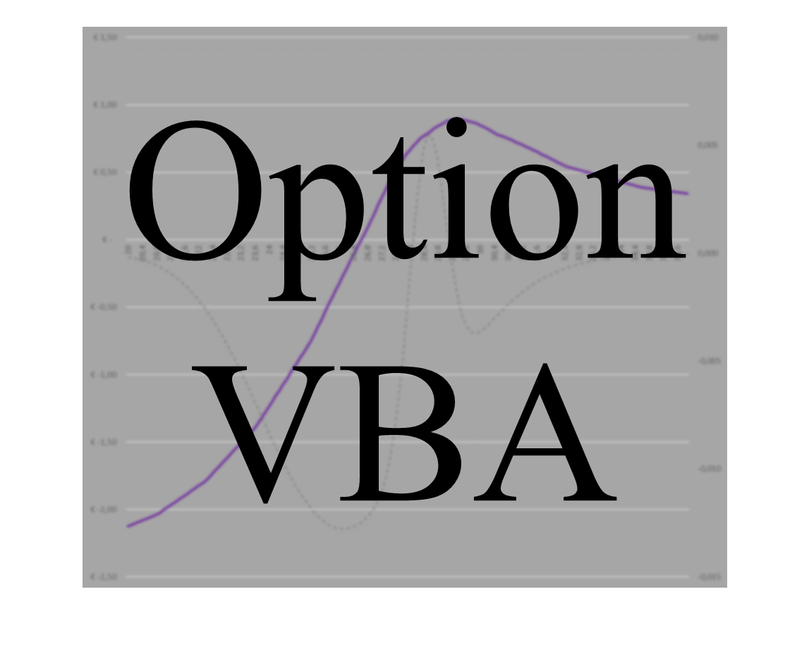
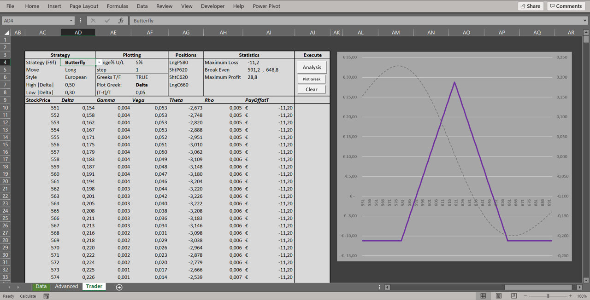
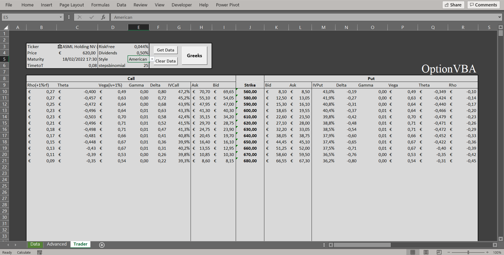

OptionVBA allows for quick analyses on complex option strategies at the click of a button. Users can simulate pay-offs, compute and visualize Greeks and time-decay of quoted vanilla options. Furthermore, with the Trader version users can quickly a nalyse pay-offs and Greeks for Long and Short positions in European and American style Call Spreads, Put Spreads, Butterfly Spreads, Condors, Strangles, and Straddles. Specific legs are found based on user-preferred Deltas.
Standard functionalities include automatic cleaning of your copy-pasted options quotes from DeGiro, and calculating implied volatilities and Greeks for both American - and European style Put and Call contracts. Manually specifying contract parameters is also possible. Implied volatilities are found using the bisection method. European style contracts are analysed using the Black and Scholes formulae. American style contracts are analysed using a binomial tree algorithm. Optionally, with the Advanced version of OptionVBA, users can simulate pay-offs of open option strategies that have up to five vanilla legs consisting of Puts, Calls, and Stock.
With the Trader version of OptionVBA you immediately gain access to all functionalities. 
Click on the Logo image below if you wish to download OptionVBA.
Feel free to contact me if you have questions, suggestions, or experience errors. Feedback is much appreciated!
E-mail:
Linkedin: https://www.linkedin.com/in/wessel-vdbrink/

